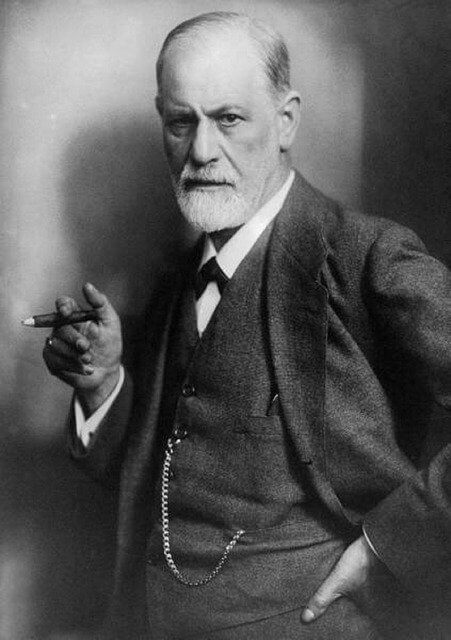

Sigmund Freud
About
Sigmund Freud (born Sigismund Schlomo Freud; 6 May 1856 – 23 September 1939) was an Austrian neurologist and the founder of psychoanalysis, a clinical method for treating psychopathology through dialogue between a patient and a psychoanalyst.
Freud was born to Galician Jewish parents in the Moravian town of Freiberg, in the Austrian Empire. He qualified as a doctor of medicine in 1881 at the University of Vienna. Upon completing his habilitation in 1885, he was appointed a docent in neuropathology and became an affiliated professor in 1902. Freud lived and worked in Vienna, having set up his clinical practice there in 1886. In 1938, Freud left Austria to escape Nazi persecution. He died in exile in the United Kingdom in 1939. wikipedia
| Year | Event |
|---|---|
| 1856 | Freud was born |
| 1873 | Freud entered the University of Vienna |
| 1881 | Freud graduated with an MD |
| 1885 | Freud was appointment as a university lecturer in neuropathology |
| 1886 | Freud entered private practice specializing in "nervous disorders" |